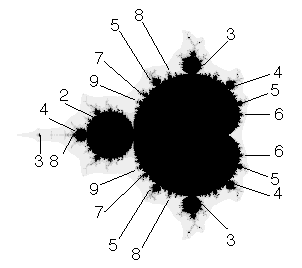

| For any c in M, the sequence |
| z0 = 0, z1 = c,
z2 = c2 + c, ... |
| does not run away to infinity. How can this happen? |
| One way is for the sequence to get closer and closer to a
single point, or to a repeating pattern of points. |
| We say the sequence converges to a
fixed point or to an
n-cycle, where n is the number of points in the
repeating pattern. For example, |
| The sequence generated by any c in the big cardioid
(heart-shaped region, the largest part of the Mandelbrot set)
converges to a fixed point. |
| The sequence generated by any c in the disc attached to the left of big
cardioid converges to a 2-cycle. |
| The sequence generated by any c in the disc attached near the top of big
cardioid converges to a 3-cycle. |
| The sequence generated by any c in the big cardioid just below where the
3-cycle disc is attached converges to a fixed point, but in a pattern
with 3 arms. |
| If the sequence generated by c converges to an
n-cycle, then the sequences generated by all c sufficiently near to this c also converge
to n-cycles. The collection of all the nearby c generating sequences converging to an n-cycle
is called an n-cycle component. |
| For discs attached to the main cardioid, the cycle number can be read from the
number of branches in the antenna
associated with the disc. |
|
|
| The picture below shows the cycles corresponding to some of the
main features of the Mandelbrot set. In
combinatorics of the Mandelbrot set
we shall learn the patterns of these cycle numbers. |
|  |
| There are c in the Mandelbrot set and not in any n-cycle component. The
point c = -2, the left-most tip of M, is an example. However, in a sense these
points appear to be spread thinly. Suppose c is such a point. Every computer picture generated
suggests that c is not completely surrounded by points of M that do not belong to some
n-cycle component. This is the Hyperbolicity Conjecture,
proposed years ago by
Mandelbrot, but still unproved despite years of effort by very bright mathematicians. |